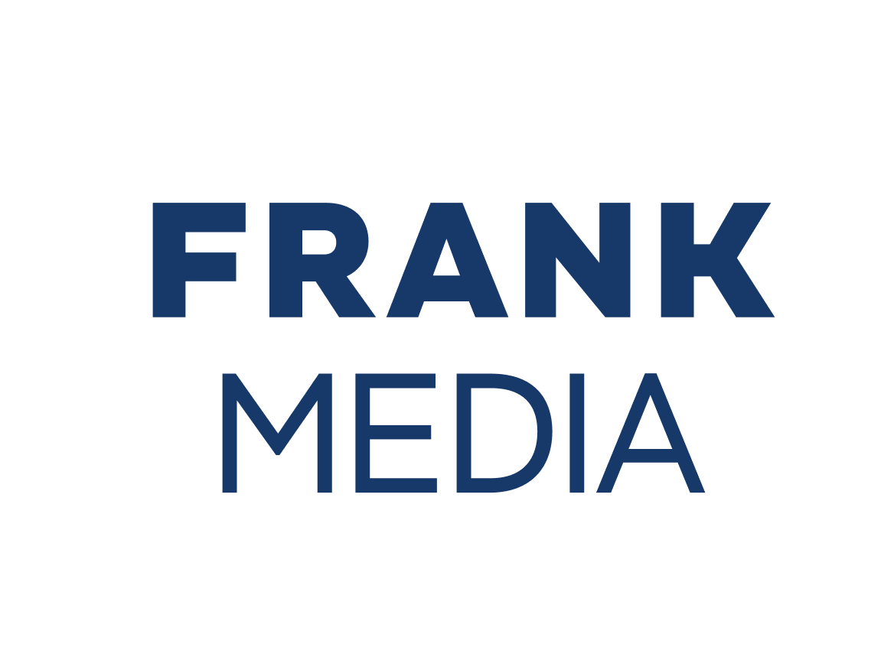
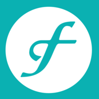

Новости
09.09.2015
СМИ: Credit Agricole грозит штраф в $900 млн за нарушение санкций США Переговоры продолжаются, и суммарный штраф может измениться.
Читать далее
01.07.2014
США подозревают 2 французских банка в нарушении режима санкций. Банки Crédit Agricole и Société Générale ранее заявляли...
Читать далее
25.04.2024
Кассация запретила французскому Credit Agricole судиться с «дочкой» «Газпрома»...
Читать далее
03.05.2024
Credit Agricole увеличил квартальную чистую прибыль на 54%, выручку - на 11%
Читать далее

08.02.2024
Crédit Agricole в 2023 году сократила активы, связанные с Россией, до €1,3 млрд
Читать далее
08.02.2024
Crédit Agricole в 2023 году сократила активы, связанные с Россией, до €1,3 млрд
Читать далее
17.01.2024
Credit Agricole: Отказ от доллара в пользу криптовалют не имеет под собой оснований
Читать далее

04.08.2024
Credit Agricole увеличил квартальную чистую прибыль на 24,7%, до рекорда
Читать далее
04.08.2024
Credit Agricole увеличил квартальную чистую прибыль на 24,7%, до рекорда
Читать далее